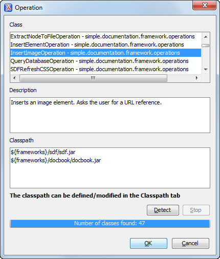

Example 1 - Simple Use of a Dialog Box from an Author Mode Operation
In this example, functionality is added for inserting images in a custom framework. The images are represented by
the <image> element. The location of the image file is represented by the
value of the @href attribute. In the Java implementation, a dialog box will
be displayed with a text field where the user can enter a full URL or browse for a local
file.
- Set up a sample project following this set of instructions. The framework project is oxygen-sample-framework.
-
Modify the simple.documentation.framework.InsertImageOperation class that
implements the ro.sync.ecss.extensions.api.AuthorOperation
interface. This interface defines three methods: doOperation, getArguments
and getDescription
A short description of these methods follows:
- The doOperation method is invoked when the action is performed either by
pressing the toolbar button, by selecting the menu item or by pressing the shortcut
key. The arguments taken by this method can be one of the following combinations:
- An object of type ro.sync.ecss.extensions.api.AuthorAccess and a map.
- Argument names and values.
- The getArguments method is used by Oxygen XML Author when the action is configured. It returns the list of arguments (name and type) that are accepted by the operation.
- The getDescription method is used by Oxygen XML Author when the operation is configured. It returns a description of the operation.
Example:
Here is the implementation of these three methods:
/** * Performs the operation. */ public void doOperation( AuthorAccess authorAccess, ArgumentsMap arguments) throws IllegalArgumentException, AuthorOperationException { JFrame oxygenFrame = (JFrame) authorAccess.getWorkspaceAccess().getParentFrame() ; String href = displayURLDialog(oxygenFrame); if (href.length() != 0) { // Creates the image XML fragment. String imageFragment = "<image xmlns='http://www.oxygenxml.com/sample/documentation' href='" + href + "'/>"; // Inserts this fragment at the cursor position. int caretPosition = authorAccess.getEditorAccess().getCaretOffset(); authorAccess.getDocumentController().insertXMLFragment (imageFragment, caretPosition); } } /** * Has no arguments. * * @return null. */ public ArgumentDescriptor[] getArguments() { return null; } /** * @return A description of the operation. */ public String getDescription() { return "Inserts an image element. Asks the user for a URL reference."; }
Note: The complete source code for framework customization examples can be found in the oxygen-sample-framework module of the Oxygen SDK, available as a Maven archetype on the Oxygen XML Author website.Important:Make sure you always specify the namespace of the inserted fragments.
<image xmlns='http://www.oxygenxml.com/sample/documentation' href='path/to/image.png'/>
- The doOperation method is invoked when the action is performed either by
pressing the toolbar button, by selecting the menu item or by pressing the shortcut
key. The arguments taken by this method can be one of the following combinations:
-
Package the compiled class into a JAR
file. An example of an Ant script that packages the classes folder
content into a JAR archive named sdf.jar is listed
below:
<?xml version="1.0" encoding="UTF-8"?> <project name="project" default="dist"> <target name="dist"> <jar destfile="sdf.jar" basedir="classes"> <fileset dir="classes"> <include name="**/*"/> </fileset> </jar> </target> </project>
- Copy the sdf.jar file into your custom framework directory ([OXYGEN_INSTALL_DIR]\frameworks\[CUSTOM_FRAMEWORK_DIR]).
- Add the sdf.jar to the class path. To do this, open the Preferences dialog box , go to Document Type Association, select SDF, and click the Edit button.
-
Select the Classpath tab in the lower part of the Document
Type configuration dialog box and click the
 Add button. In the
displayed dialog box, enter the location of the JAR file, relative to the Oxygen XML Author
frameworks folder.
Add button. In the
displayed dialog box, enter the location of the JAR file, relative to the Oxygen XML Author
frameworks folder.
- Next, create the action that will use the defined operation. Go to the Actions subtab. Copy the icon files for the menu item and for the toolbar in your custom framework directory ([OXYGEN_INSTALL_DIR]\frameworks\[CUSTOM_FRAMEWORK_DIR]).
-
Define the action's properties:
- Set ID to insert_image.
- Set Name to Insert image.
- Set Menu access key to letter i.
- Set Toolbar action to ${framework}/toolbarImage.png.
- Set Menu icon to ${framework}/menuImage.png.
- Set Shortcut key to Ctrl (Meta on Mac OS)+Shift+i.
-
Next, set up the operation. You want to add images only if the current element is a
<section>,<book>or<article>.- Set the value of XPath expression to
local-name()='section' or local-name()='book' or local-name()='article'
- Set the Invoke operation field to simple.documentation.framework.InsertImageOperation.
Figure 1. Selecting the Operation  - Set the value of XPath expression to
- Add the action to the toolbar, using the Toolbar panel.
To test the action, open or create an XML file and place the cursor at a valid location. Then click the button associated with the action from the toolbar. In the dialog box, select an image URL and click OK. The image is inserted into the document.